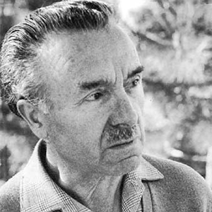

Maria Montessori foi uma educadora italiana que revolucionou o campo da educação
infantil e deixou um legado duradouro no campo da pedagogia. Ela nasceu em 31 de agosto de 1870, em
Chiaravalle, na Itália, e se tornou uma das primeiras mulheres a ingressar na Faculdade de Medicina
da Universidade de Roma, onde se formou como médica em 1896.
A paixão de Montessori pela medicina e pela observação científica a levou a uma abordagem inovadora
no campo da educação. Ela acreditava que cada criança tem um potencial único e que o ambiente
desempenha um papel fundamental no desenvolvimento infantil. Montessori defendia a ideia de que as
crianças são naturalmente curiosas e motivadas a aprender, e cabe aos educadores fornecer um
ambiente adequado que promova sua autodisciplina, independência e amor pelo conhecimento.
Em 1907, Montessori fundou sua primeira "Casa dei Bambini" ou "Casa das Crianças" em um bairro
carente de Roma. Ela desenvolveu um ambiente cuidadosamente preparado, com materiais educacionais
sensoriais e atividades práticas que permitiam às crianças aprenderem em seu próprio ritmo.
Montessori observou que, quando as crianças tinham liberdade para escolher suas atividades e
trabalhar de forma independente, elas se tornavam mais engajadas, concentradas e autoconfiantes.
O método Montessori enfatiza a importância do movimento físico e do aprendizado prático. As crianças
são encorajadas a manipular materiais sensoriais, como blocos de encaixe, contas, mapas e letras
móveis, que estimulam os sentidos e promovem a exploração ativa do ambiente. Montessori também
valorizava o desenvolvimento social e emocional das crianças, enfatizando a importância da
colaboração, respeito mútuo e cuidado pelos outros.
Ao longo de sua carreira, Maria Montessori viajou pelo mundo, dando palestras e treinando educadores
no seu método. Sua abordagem pedagógica ganhou reconhecimento internacional e continua a influenciar
a educação até os dias de hoje. Montessori acreditava que a educação é uma ferramenta poderosa para
promover a paz e a compreensão global, e que é fundamental cultivar o respeito pelas necessidades
individuais de cada criança.
Maria Montessori faleceu em 6 de maio de 1952, deixando um legado inspirador. Seu método educacional
continua atraindo pais e educadores que buscam uma abordagem centrada na criança, que valoriza a
liberdade, a autonomia e o desenvolvimento integral de cada indivíduo. A influência de Montessori
pode ser encontrada em escolas ao redor do mundo, e sua visão de educação continua a inspirar
gerações de educadores comprometidos com o potencial inato de cada criança.
Leia mais clicando aqui.

Celestin Freinet foi um educador francês que desempenhou um papel fundamental na
reforma da educação do século XX. Ele nasceu em 15 de outubro de 1896, em Gars, uma pequena vila no
sul da França. Freinet experimentou uma educação tradicional durante sua infância, mas sua
experiência na Primeira Guerra Mundial e sua paixão pela justiça social o levaram a questionar e
repensar o sistema educacional existente.
Freinet acreditava em uma abordagem educacional baseada na experiência prática, na cooperação entre
os alunos e na valorização das necessidades e interesses individuais das crianças. Ele via a escola
como um local onde os alunos deveriam ser preparados para a vida, desenvolvendo habilidades
essenciais, como pensamento crítico, comunicação e autonomia.
Uma das principais contribuições de Freinet foi o desenvolvimento da "Imprensa Escolar", um método
que permitia que os alunos se engajassem na escrita e na produção de textos reais, como jornais e
revistas. Ele acreditava que essa abordagem não apenas estimulava a expressão individual dos alunos,
mas também promovia a cooperação, a aprendizagem colaborativa e o desenvolvimento de habilidades de
leitura e escrita.
Freinet também defendia a importância do trabalho manual e da experimentação na educação. Ele
acreditava que as crianças aprendiam melhor através da manipulação ativa de materiais concretos e da
realização de projetos práticos relacionados ao seu ambiente e interesses. Ele introduziu atividades
como jardinagem, carpintaria, cerâmica e outras formas de aprendizado prático nas salas de aula.
Outro aspecto central do trabalho de Freinet era a comunicação aberta e efetiva entre os alunos, pais
e professores. Ele promovia o diálogo constante e o envolvimento dos pais no processo educacional,
valorizando sua participação ativa na vida escolar de seus filhos.
O legado de Celestin Freinet na educação é significativo. Ele acreditava que a educação deveria ser
libertadora e promover o desenvolvimento integral dos alunos, levando em consideração suas
necessidades individuais e suas experiências de vida. Seu trabalho influenciou a pedagogia moderna e
inspirou a criação de escolas baseadas em seus princípios, conhecidas como "Escolas Freinet", que se
espalharam por todo o mundo.
Celestin Freinet faleceu em 8 de outubro de 1966, deixando um impacto duradouro na educação. Sua
visão de uma educação centrada no aluno, participativa e baseada na experiência prática continua a
inspirar educadores e defensores da transformação educacional, que buscam promover uma abordagem
mais humanizada e significativa para o ensino e aprendizado.
Leia mais clicando aqui.
Paulo Freire foi um renomado educador brasileiro e filósofo da educação que se
destacou por sua abordagem pedagógica centrada na conscientização e na libertação. Ele nasceu em 19
de setembro de 1921, em Recife, no Brasil, e dedicou sua vida ao trabalho em prol da justiça social
e da transformação da educação.
A abordagem educacional de Freire é conhecida como "Educação Popular" ou "Pedagogia do Oprimido". Ele
acreditava que a educação é um ato político e que a libertação das pessoas oprimidas só pode ser
alcançada por meio da conscientização crítica e da ação coletiva. Freire enfatizava a importância de
entender o contexto social, político e econômico em que os estudantes vivem, e buscava despertar sua
consciência sobre as estruturas de poder e as injustiças que permeiam a sociedade.
Um dos conceitos centrais na pedagogia de Freire é o diálogo. Ele defendia a importância de uma
relação igualitária entre educadores e estudantes, onde ambos pudessem compartilhar conhecimentos,
experiências e perspectivas de forma aberta e respeitosa. Para Freire, a educação não deveria ser um
processo de transmissão passiva de informações, mas sim um diálogo crítico e transformador, no qual
os alunos são encorajados a questionar, refletir e se tornarem agentes ativos de mudança.
Outro aspecto fundamental do trabalho de Freire foi sua ênfase na alfabetização como um instrumento
de libertação. Ele desenvolveu um método de alfabetização que partia da realidade e das experiências
dos estudantes, relacionando a aprendizagem da leitura e da escrita às questões e desafios
enfrentados por eles em seu cotidiano. Freire via a alfabetização como uma ferramenta para capacitar
as pessoas a compreenderem e transformarem seu mundo, permitindo-lhes reivindicar seus direitos e
participar ativamente na sociedade.
A obra mais conhecida de Paulo Freire é o livro "Pedagogia do Oprimido", publicado em 1968. Nessa
obra, ele descreve os princípios de sua pedagogia e critica a educação bancária, que trata os alunos
como recipientes vazios a serem preenchidos com informações. Freire propôs uma abordagem pedagógica
libertadora, que respeita a cultura e a experiência dos alunos, estimula sua criatividade e senso
crítico, e os capacita a se tornarem sujeitos ativos na transformação de suas próprias vidas e da
sociedade.
Paulo Freire teve um impacto profundo não apenas no Brasil, mas em todo o mundo. Sua abordagem
pedagógica influenciou educadores, ativistas e defensores da justiça social em diversos países.
Freire foi reconhecido internacionalmente por seu trabalho e recebeu vários prêmios e honrarias ao
longo de sua carreira.
Paulo Freire faleceu em 2 de maio de 1997, deixando um legado inspirador. Sua visão de uma educação
libertadora e transformadora continua a ser uma referência para aqueles que buscam promover a
igualdade, a justiça social e a emancipação das pessoas oprimidas por meio da educação. Seu trabalho
é um lembrete poderoso do poder da educação como uma ferramenta para a construção de um mundo mais
justo e inclusivo.
Leia mais clicando aqui.
Loris Malaguzzi foi um renomado educador italiano, nascido em 23 de fevereiro de
1920, na cidade de Correggio. Ele é reconhecido por seu papel fundamental no desenvolvimento da
abordagem educacional inovadora conhecida como "Abordagem Reggio Emilia".
Reggio Emilia é uma cidade na região da Emília-Romanha, na Itália, onde surgiu uma abordagem
educacional reconhecida internacionalmente. Essa abordagem foi desenvolvida após a Segunda Guerra
Mundial, quando Malaguzzi e um grupo de pais e educadores locais se uniram para criar um sistema
educacional baseado em valores humanistas, participação comunitária e expressão artística.
O enfoque de Reggio Emilia enfatiza a importância do ambiente como o terceiro professor. Malaguzzi
acreditava que o espaço físico e os materiais disponíveis influenciam a aprendizagem e o
desenvolvimento das crianças. Assim, os ambientes educacionais em Reggio Emilia são cuidadosamente
projetados para promover a exploração, a curiosidade e o engajamento ativo dos alunos.
Outro aspecto essencial da abordagem Reggio Emilia é o papel da expressão artística, especialmente a
arte visual, como uma forma de linguagem e comunicação. Acredita-se que a arte desempenha um papel
central no processo de aprendizagem, permitindo que as crianças expressem seus pensamentos,
sentimentos e ideias de maneiras não verbais. A arte também é vista como um meio poderoso de
investigação e exploração do mundo ao redor.
A colaboração e a participação ativa são princípios fundamentais em Reggio Emilia. As crianças são
incentivadas a trabalhar em grupos, a compartilhar ideias e a tomar decisões coletivamente. Os
professores atuam como facilitadores, estimulando a colaboração e a troca de conhecimento entre os
alunos.
Além disso, o diálogo é altamente valorizado em Reggio Emilia. As crianças são encorajadas a
expressar suas ideias, fazer perguntas e refletir sobre suas experiências. Os educadores promovem um
ambiente de escuta ativa e respeito mútuo, onde as vozes de todas as crianças são valorizadas e
levadas em consideração.
O sistema de avaliação em Reggio Emilia difere da abordagem tradicional. Em vez de se concentrar em
notas e avaliações padronizadas, a ênfase é colocada na documentação do processo de aprendizagem das
crianças. Os educadores registram observações, fotografias e trabalhos das crianças, a fim de
documentar sua jornada de aprendizagem e refletir sobre o progresso individual e coletivo.
A abordagem Reggio Emilia influenciou a educação em todo o mundo e tem sido amplamente adotada em
várias partes do globo. A visão de Malaguzzi e seus colaboradores sobre a educação como um processo
participativo, colaborativo e centrado na criança continua a inspirar educadores a promover a
criatividade, a curiosidade e a autonomia das crianças.
Loris Malaguzzi faleceu em 30 de janeiro de 1994, mas seu legado vive através das práticas
educacionais de Reggio Emilia. Sua visão inovadora e progressista sobre a educação continua a moldar
a forma como entendemos o papel da escola na formação das crianças e na construção de uma sociedade
mais justa e participativa
Leia mais clicando aqui.